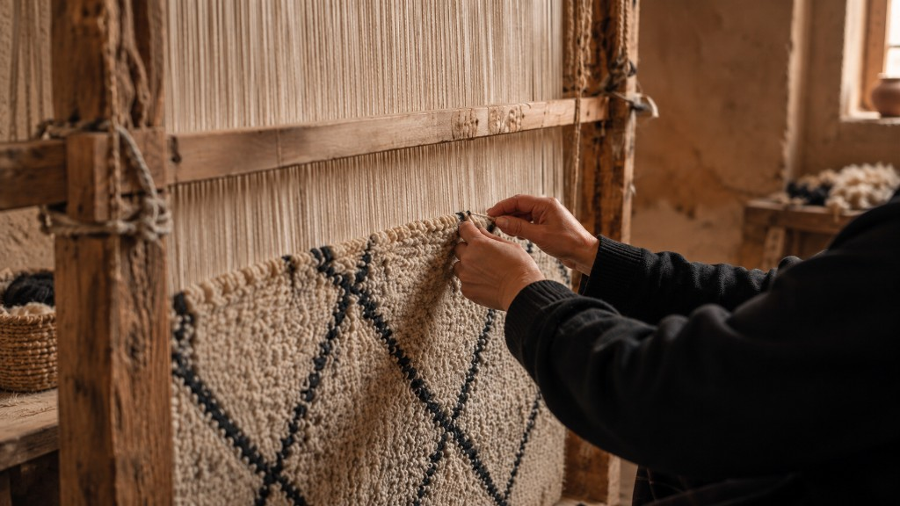

The house of Yasmina
Four generations of hands, one language of wool.
Every knot holds a name. My grandmother's hands are still in this wool.
Yasmina
For four generations, Yasmina's family has preserved the art of Moroccan rug weaving, ancestral craftsmanship, contemporary rooms, and pieces with meaning.
Read the full story →